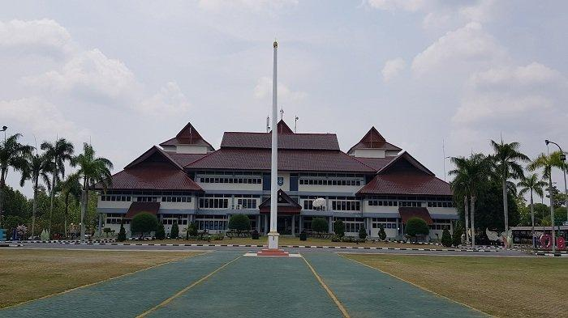
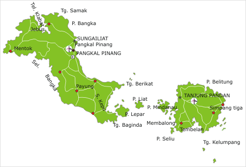
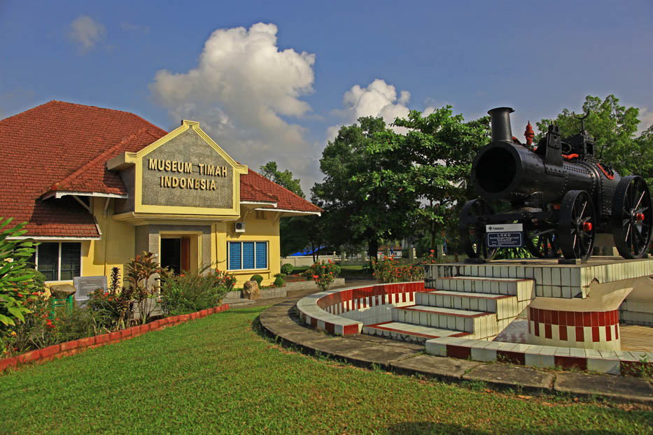
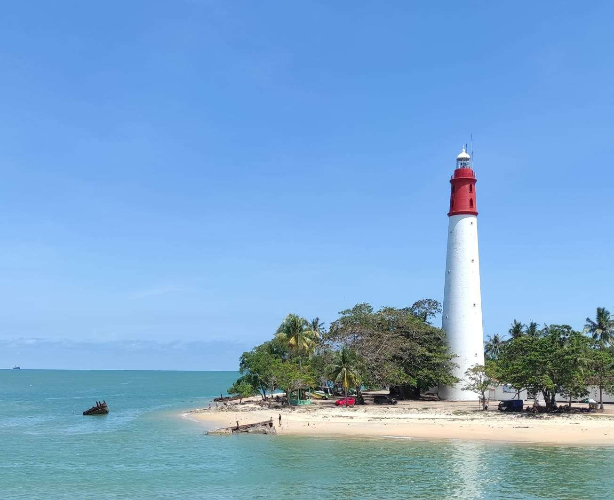

Sejarah

Bangka Belitung memiliki sejarah yang panjang, dimulai dari
kerajaan-kerajaan lokal dan keterlibatan dalam perdagangan maritim.
Pada abad ke-18, wilayah ini dikuasai oleh Kesultanan Palembang
sebelum Belanda mengambil alih untuk menguasai tambang timah yang
kaya di Bangka. Pada masa kolonial Belanda, Bangka dan Belitung
menjadi pusat produksi timah dunia.
Setelah Indonesia merdeka, Bangka Belitung bergabung dengan Sumatera
Selatan, tetapi pada tahun 2000, wilayah ini resmi menjadi provinsi
sendiri. Sejarahnya mencerminkan perpaduan budaya lokal, pengaruh
kolonial, serta perkembangan ekonomi berbasis tambang timah.
Geografis

Bangka Belitung, di timur Sumatera, terdiri dari Pulau Bangka dan
Belitung serta pulau kecil lainnya. Dikelilingi Laut Cina Selatan
dan Selat Karimata, wilayahnya dikenal dengan pantai pasir putih,
batu granit, tambang timah, serta iklim tropis.
Wisata
Bangka Belitung terkenal dengan wisata alamnya, terutama pantai
berpasir putih dan batu granit besar seperti di Pantai Tanjung
Tinggi dan Pantai Parai Tenggiri. Ada juga Pulau Lengkuas dengan
mercusuar bersejarah, serta Pulau Leebong yang tenang. Selain itu,
terdapat wisata budaya seperti Museum Timah dan wisata religi di
Vihara Dewi Kwan Im. Kekayaan lautnya juga menawarkan spot menyelam
dan snorkeling.
Museum Timah Indonesia

Museum Timah Indonesia di Pangkalpinang adalah museum khusus yang
menampilkan sejarah dan perkembangan industri timah di Bangka
Belitung. Didirikan pada tahun 1958, museum ini menempati bangunan
peninggalan Belanda dan menyimpan koleksi artefak seperti alat
penambangan tradisional, peta tambang, serta model proses
penambangan. Terdapat pula dokumentasi sejarah kolonial Belanda
dan Jepang terkait eksploitasi timah. Museum ini memberikan
gambaran rinci tentang peran penting timah dalam ekonomi lokal dan
global, serta pengaruhnya terhadap kehidupan masyarakat setempat.
Mercusuar Bangka Belitung

Mercusuar di Bangka Belitung yang paling terkenal adalah Mercusuar
Pulau Lengkuas, terletak di lepas pantai Belitung. Dibangun pada
tahun 1882 oleh pemerintah kolonial Belanda, mercusuar ini
memiliki tinggi sekitar 50 meter dengan 18 lantai. Meskipun sudah
tua, mercusuar ini masih berfungsi untuk navigasi kapal.
Pengunjung dapat naik ke puncak mercusuar dan menikmati
pemandangan spektakuler dari pulau-pulau kecil, pantai berpasir
putih, serta laut jernih yang mengelilinginya. Mercusuar ini
menjadi salah satu daya tarik utama wisata di Belitung karena
nilai sejarah dan panoramanya yang indah.